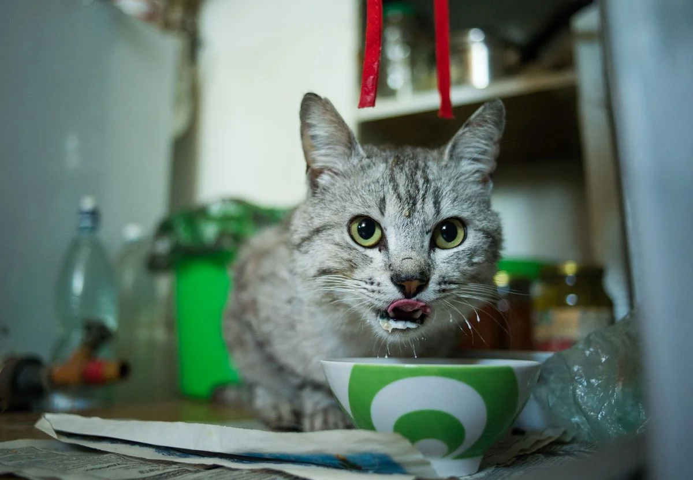
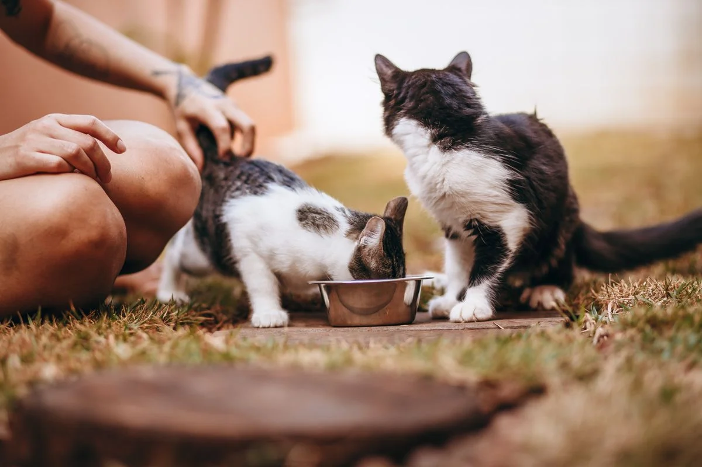
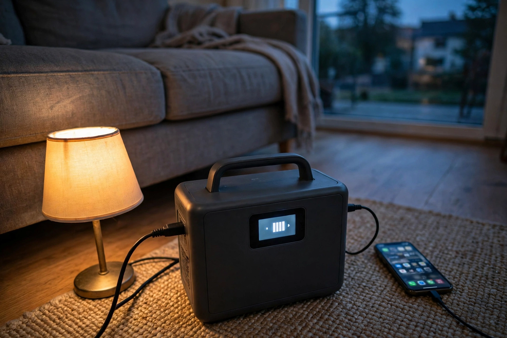
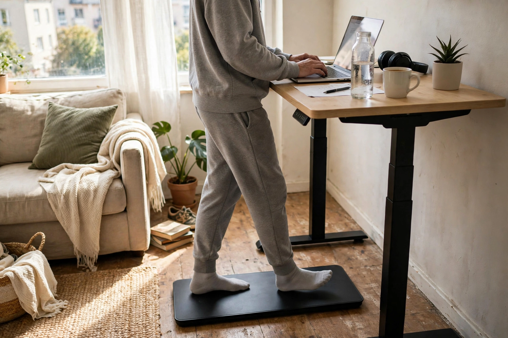

Best Automatic Cat Feeders: What Actually Matters Before You Buy
What should I check before buying an automatic cat feeder?
Check four things before you buy: portion size, schedule, power backup, and cleaning. Portions should be small and adjustable, so one meal cannot overfeed your cat. The schedule should match how often your cat eats — most feeders here cover 5 to 15 meals a day. Make sure meals still happen in a power cut: battery backup, or a battery-powered feeder. And check the bowl and hopper come apart for washing, because a feeder you cannot clean gets dirty fast.
Our pick: PETLIBRO Granary Automatic Pet Feeder (5L) — the best all-round pick here: it schedules up to 10 meals a day in portions as small as about 20ml each, holds 5 litres of dry food, and has a battery backup so scheduled meals still run in a power cut.
Check price on AmazonAffiliate link to be added after approval. No price shown here — check it on Amazon.
At a glance
| Feeder | Best for | Check price |
|---|---|---|
| PETLIBRO Granary Automatic Pet Feeder (5L) | Best all-round pick | Link pending |
| PetSafe Smart Feed Automatic Pet Feeder, 2nd Generation | Most meals per day and slow feeding | Link pending |
| Whisker Feeder-Robot | Biggest hopper and anti-jam | Link pending |
| Cat Mate C500 Automatic Pet Feeder | Wet food | Link pending |
| WOPET Patrol WiFi Automatic Pet Feeder (F07) | Most meals per day on a smaller hopper | Link pending |

We may earn a commission if you buy through links on this page. As an Amazon Associate I earn from qualifying purchases.
What you need
Five feeders, each verified live on the manufacturer's own page on 11 November 2026. They cover the three things that matter most: portion control, scheduling, and whether meals still happen when the power or the Wi-Fi drops. No prices here on purpose — check the price on Amazon, and check the portion and kibble sizes against your cat's food before you buy.
PETLIBRO Granary Automatic Pet Feeder (5L)
Schedules up to 10 meals a day, 1 to 50 portions per meal, each portion about 20ml (around 10g). The 5-litre hopper takes dry kibble sized 2–15mm, and the USB adapter plus battery backup keeps scheduled meals running in a power cut. App control over Wi-Fi, with feeding logs and low-food alerts.
Watch out: Dry food only — PETLIBRO's own page says it does not work with wet food. On battery power alone, the Wi-Fi, record and reset functions switch off to save battery, though scheduled meals still run.
Check price on AmazonAffiliate link to be added after approval. No price shown here — check it on Amazon.
PetSafe Smart Feed Automatic Pet Feeder, 2nd Generation
Holds 24 cups of dry or semi-moist food and schedules up to 12 meals a day, in sizes from 1/8 cup to 4 cups per meal. The slow-feed setting spreads a meal over 15 minutes for cats that eat too fast, and low and empty food sensors send alerts to your phone. The lid, hopper, bowl and bowl holder are dishwasher safe.
Watch out: App control needs a 2.4GHz Wi-Fi router. It runs on an AC adapter with a backup battery option using 4 D-cell batteries, which are not included — check that before you rely on it in a power cut.
Check price on AmazonAffiliate link to be added after approval. No price shown here — check it on Amazon.
Whisker Feeder-Robot
The biggest hopper here: up to 32 cups of dry or semi-moist food. Schedules up to 8 meals a day, plus snacks, with portions from 1/8 cup to 1 cup. Anti-jam technology and food backup detection are built to prevent missed meals, even offline, and the Whisker app tracks feeding habits.
Watch out: The backup battery is sold separately — it gives 24 hours of use in power-saving mode, but you have to buy it. Removable parts are hand-wash only, not dishwasher safe, so check the cleaning routine before you buy.
Check price on AmazonAffiliate link to be added after approval. No price shown here — check it on Amazon.
Cat Mate C500 Automatic Pet Feeder
The only feeder here built for wet food: five compartments, each holding up to 11.5 ounces (330g) of food, with twin ice packs underneath to keep wet, dry or mixed food fresh. The digital timer programs up to 4 mealtimes, with one compartment open straight away. It runs on 3 AA batteries for about 12 months, so no plug and no Wi-Fi are needed at all.
Watch out: Five meals is the whole capacity — after that you refill by hand. You portion each meal yourself, and the ice packs need freezing ahead of time, so this is a day-or-two feeder, not a week-away feeder.
Check price on AmazonAffiliate link to be added after approval. No price shown here — check it on Amazon.
WOPET Patrol WiFi Automatic Pet Feeder (F07)
A 6-litre hopper with the most meals per day of the app feeders here: up to 15 meals a day, 1 to 50 portions per meal, each portion about 5g. Dry food only, kibble size 5–15mm. The hopper is detachable for cleaning and refilling, and the app sends an alert if the hopper runs empty.
Watch out: Dry food only, and remote control needs Wi-Fi and the app — check what it does if the Wi-Fi drops before you rely on it while away. At about 5g per portion, check the portion count against your cat's daily amount.
Check price on AmazonAffiliate link to be added after approval. No price shown here — check it on Amazon.
How to pick
- Start with your cat's food, not the feeder. Wet food narrows the choice to a tray feeder like the Cat Mate C500. Dry kibble opens up the hopper feeders — but check the kibble size range on the manufacturer's page first: the PETLIBRO takes 2–15mm, the WOPET 5–15mm.
- Work out the portion, then the schedule. Weigh what your cat eats in a day, then divide it into meals. A feeder that only does big portions cannot do small, frequent meals. Check the smallest portion: about 20ml on the PETLIBRO, about 5g on the WOPET, 1/8 cup on the PetSafe and the Feeder-Robot.
- Plan for the power cut. Ask what happens when the power or the Wi-Fi goes down. Battery backup, a battery-powered feeder like the C500, or a feeder that keeps its schedule offline are the answers that matter — a feeder that stops feeding when the router restarts is not one to leave a cat with.
- Check cleaning before you buy. The bowl and hopper should come apart and be easy to wash. The PetSafe parts are dishwasher safe; the Feeder-Robot parts are hand-wash only. If you cannot see how it comes apart on the manufacturer's page, ask before you buy.

Photos still needed
No product in this guide has been tested hands-on by us yet, so there are no real at-home photos of the actual models. Still missing — needs real at-home photos:
- A feeder on a kitchen floor with a cat eating from it
- The hopper open, showing how it fills and how the bowl comes off for washing
- A feeder running on battery backup during a power cut
- Real test photos of the feeders in this guide, taken at home
Comparison
| Feeder | Best for | What to check before you buy | Watch out for |
|---|---|---|---|
| PETLIBRO Granary (5L) | Best all-round pick | Capacity (5L), 1–10 meals a day, portions about 20ml each, kibble 2–15mm | Dry food only; Wi-Fi off on battery power |
| PetSafe Smart Feed, 2nd Generation | Most meals per day and slow feeding | Capacity (24 cups), up to 12 meals a day, 1/8–4 cups per meal, slow-feed setting | Needs 2.4GHz Wi-Fi; backup batteries not included |
| Whisker Feeder-Robot | Biggest hopper and anti-jam | Capacity (up to 32 cups), up to 8 meals a day, portions 1/8–1 cup, anti-jam | Backup battery sold separately; hand-wash only |
| Cat Mate C500 | Wet food | 5 compartments, up to 11.5 ounces (330g) each, twin ice packs, 3 AA batteries | Only 5 meals before a refill; ice packs need freezing |
| WOPET Patrol (F07) | Most meals per day on a smaller hopper | Capacity (6L), up to 15 meals a day, 1–50 portions, about 5g each, kibble 5–15mm | Dry food only; needs Wi-Fi and the app for remote control |
How we picked
These products were verified live on the manufacturers' own pages on 11 Nov 2026. They were NOT part of the original 25-product score set (that set covered the Litter-Robot 4 and Furbo 360 in Guide D). The five feeders here were picked to cover the real choice a cat owner faces: a hopper feeder for dry food, a tray feeder for wet food, and different answers to the power-cut question.
| Products scored in our research | Products in this guide | Hands-on tests run |
|---|---|---|
| 25 (original four-area set) | 5 | 0 — none yet |
What we have not done yet: no product in this guide has been tested hands-on by us. When we test one at home, this box will say so, with the date.
Troubleshooting
The feeder missed a meal
Check the power first: is it plugged in, and are the backup batteries in and fresh? Then check the hopper — a jam or an empty hopper is the most common cause. The PETLIBRO and WOPET apps send a low-food or blockage alert if they are connected; the Feeder-Robot has anti-jam technology and food backup detection, but check the bowl anyway. If the feeder runs on a schedule stored in the app, check the Wi-Fi is up.
Food is jamming in the hopper
Check the kibble size against the manufacturer's range — the PETLIBRO takes 2–15mm, the WOPET 5–15mm. Kibble bigger than the stated range is the usual cause. Empty the hopper, clear the outlet, and refill with kibble inside the range. Do not mix in wet food or treats: every hopper feeder in this guide is dry food only, except the PetSafe and Feeder-Robot, which take dry or semi-moist food.
The cat will not eat from the feeder
Leave the feeder out, switched off, with food in the bowl for a few days so the cat gets used to it before you switch the schedule on. Put a little of the cat's usual food in the bowl by hand at first. If the feeder plays a meal call, record your own voice — the PETLIBRO and WOPET both have a meal-call recording — and check the feeder is not too loud or too close to where the cat sleeps.
Frequently asked questions
Can an automatic cat feeder handle wet food?
Most feeders in this guide are dry-food only — the PETLIBRO Granary and the WOPET Patrol F07 both say so on their own pages. The Cat Mate C500 is the one built for wet food: five compartments with twin ice packs to keep it fresh. The PetSafe Smart Feed and the Whisker Feeder-Robot handle dry or semi-moist food, not wet food.
What happens to feeding if the power goes out?
It depends on the feeder. The PETLIBRO Granary has a battery backup, but its Wi-Fi features switch off on battery power while scheduled meals still run. The PetSafe Smart Feed has a backup battery option using 4 D-cell batteries. The Feeder-Robot backup battery is sold separately. The Cat Mate C500 runs entirely on 3 AA batteries, so a power cut changes nothing.
How do I stop my cat overeating from an automatic feeder?
Use small, measured portions spread across several meals a day, not one big drop. Every feeder in this guide lets you set the portion per meal — check the smallest portion size before you buy. If your cat eats too fast, the PetSafe Smart Feed has a slow-feed setting that spreads a meal over 15 minutes. Avoid a gravity mode that keeps the bowl full if your cat grazes without stopping.
Sources
- PETLIBRO — Granary Automatic Cat Feeder with WiFi App Control: https://petlibro.com/products/petlibro-5g-wifi-automatic-pet-feeder?variant=41329532076079
- PetSafe — Smart Feed Automatic Dog and Cat Feeder, 2nd Generation: https://www.petsafe.com/i/smart-feed/PFD00-16828/
- Whisker — Feeder-Robot Automatic Pet Feeder for Cats and Dogs: https://www.whisker.com/feeder-robot
- Closer Pets (Pet Mate) — Cat Mate C500, 5 Meal Digital Automatic Feeder with Ice Packs: https://closerpets.com/collections/dog-feeders/products/five-meal-automatic-pet-feeder-with-digital-timer-c500-petmate
- WOPET — Patrol WiFi Automatic Pet Feeder with App Control (F07): https://wopet.com/product/wopet-patrol-automatic-wifi-pet-feeder/
- Pexels photos: Angelina Zhang (gray cat eating from a ceramic bowl), Helena Lopes (two cats eating from a bowl), Chalta Phirta (tabby cat eating from a ceramic bowl), Mónika Erdei (orange cat near a white bowl) — all free licence.
Keep going

Prep & PowerPortable Power Stations for a 72-Hour Home Kit: What Actually Matters Before You Buy
What actually matters when buying a portable power station for a 72-hour home kit: size, recharge, and what must stay on.
Read the guide → Kitchen & Cleaning
Kitchen & CleaningRobot Vacuum and Mop, Tested in a Real Home: What to Check Before You Buy
What to check before you buy a robot vacuum and mop: thresholds, pet hair, mop contact, and noise.
Read the guide →
Home FitnessWalking Pads for Small Spaces: Quiet, Foldable, and Actually Usable in an Apartment?
Are walking pads quiet, foldable and actually usable in an apartment? What to check before you buy.
Read the guide →